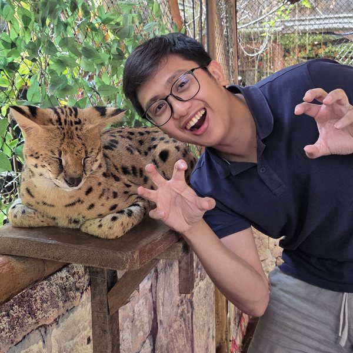

Rashad Aziz
I'm a master's student in Natural Language Processing at MBZUAI. Previously, I studied Computer Science at the University of Queensland and Universitas Indonesia, and I was a Data Scientist at Gojek. I'm broadly interested in topics surrounding AI alignment, oversight, and control.

Research & Writing
-
Depth-Conditioned Backdoors in Looped Language Models
LessWrong, 2026
-
Low-Resource Safety Failures Are Action Failures, Not Representation Failures
Findings of EMNLP, 2026
-
CA-BED: Conversation-Aware Bayesian Experimental Design
Reliable Autonomy Workshop at ICLR, 2026
Background
-
2026 – nowMSc in Natural Language Processing, MBZUAI
-
2024 – 2026Data Scientist, Gojek
-
2020 – 2024BS in Computer Science, Universitas Indonesia & The University of Queensland · double degree